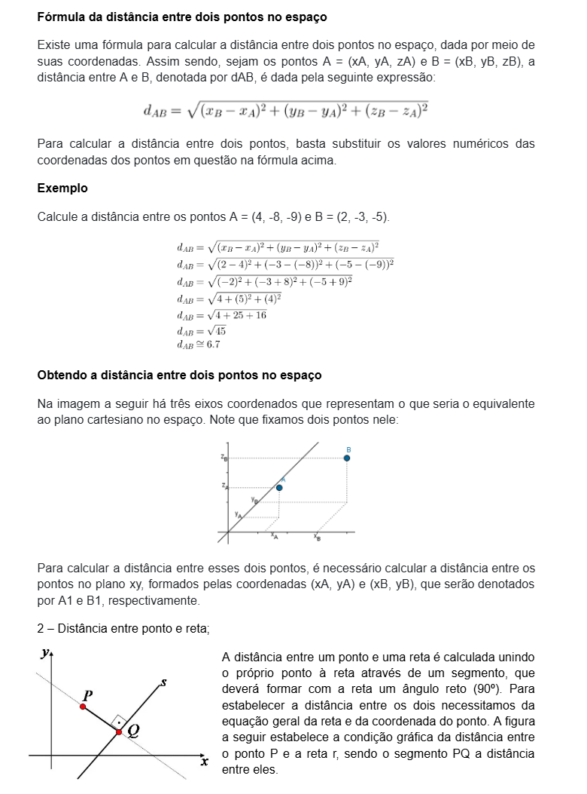
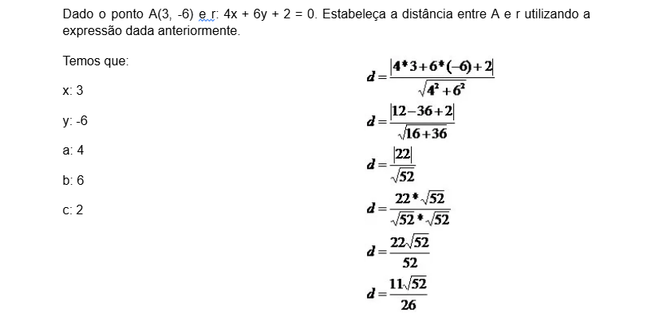
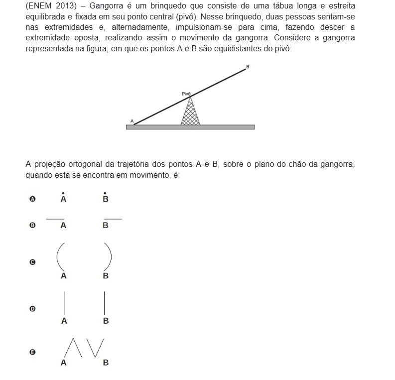
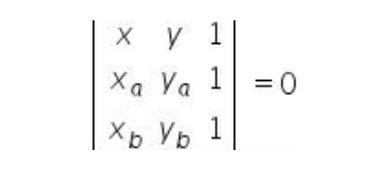
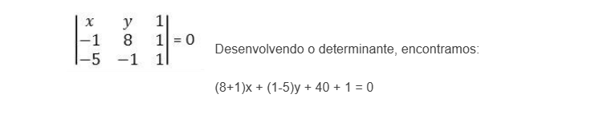
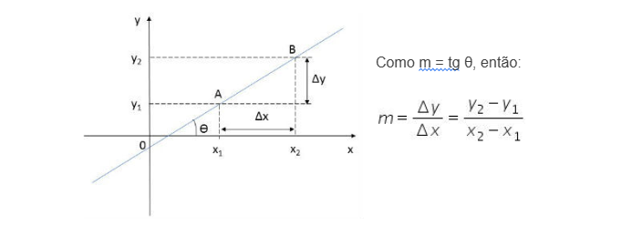
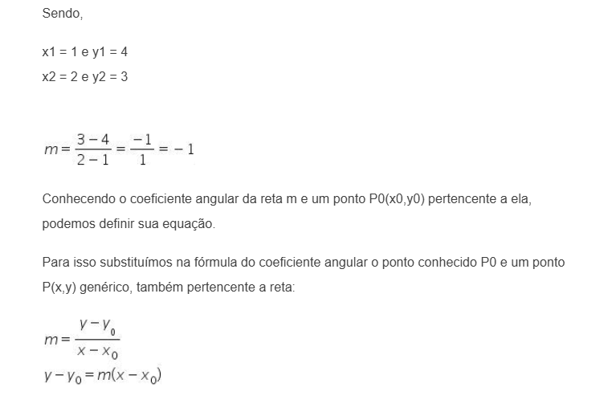
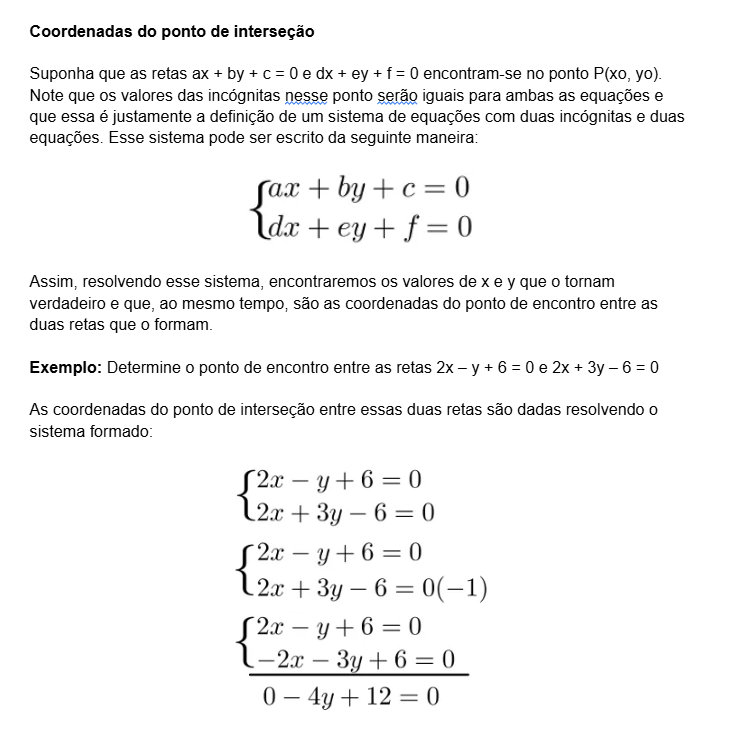
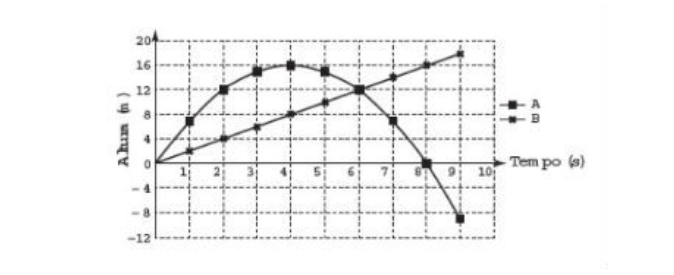
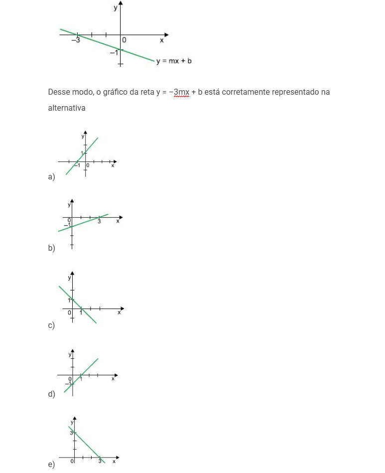

πclass — o principal pilar do seu aprendizado

Essa disciplina engloba conceitos da geometria plana, geometria espacial e álgebra. É bom que o aluno saiba como encontrar as distâncias no plano cartesiano:
Utilizando esse teorema, é possível chegar à fórmula usada para calcular o comprimento do segmento de reta que liga dois pontos.
Para calcular a distância entre dois pontos no espaço, é necessário calcular antes a distância entre dois pontos no plano. Adiante demonstraremos como esses cálculos são feitos para obter a fórmula em questão.
Estabelecendo a equação geral da reta s: ax + by + c = 0 e a coordenada do ponto P(x0,y0), conseguimos chegar à expressão capaz de calcular a distância entre o ponto P e a reta s:
d = |ax0 + by0 + c|
√(a2 + b2)
Essa expressão surge de uma generalização feita, podendo ser utilizada nas situações em que envolve o cálculo da distância entre um ponto qualquer e uma reta.
Exemplo - Seja r: Ax + By + C1 = 0 e s: Ax + By + C2 = 0 duas retas paralelas.Seja r: Ax + By + C1 = 0 e s: Ax + By + C2 = 0 duas retas paralelas.
- A distância d entre as retas r e s é dada por:
d = |c1 - c2| / √(A² + B²)
Em outras palavras, a distância é o módulo da diferença entre os termos constantes das equações das retas, dividido pela raiz quadrada da soma dos quadrados dos coeficientes de x e y.
Para o Enem, é indispensável estudar projeções ortogonais sobre o plano e compreender bem esse conteúdo. Nesse exame, é comum aparecerem exercícios sobre isso.
Dado o plano α e a figura A, a projeção ortogonal de A sobre α será o conjunto de pontos formado pelas projeções ortogonais de todos os pontos de A sobre α.
É necessário usar a imaginação para observar projeções ortogonais. No caso dessas figuras, é bom pensar no formato que teria sua sombra ao meio-dia em um solo plano.
O exemplo seguinte demonstra o último tipo de projeção ortogonal, que é aquele em que é preciso imaginar a trajetória descrita por pontos e objetos para pensar em sua projeção. Observe:
Exemplo: Observe que a trajetória dos pontos A e B são partes de uma circunferência. Para quem olha de cima, o ponto B, por exemplo, move-se em linha reta para trás e, depois, para frente. Para quem está de frente para essa gangorra, essa trajetória seria como na letra C da questão. Entretanto, a projeção ortogonal é o movimento equivalente à trajetória vista por cima.
Gabarito: letra B.Também sugerimos que os alunos saibam lidar com todas as versões possíveis de equações da reta e da circunferência e não se esqueçam de aprender uma forma de encontrar o ponto de intersecção entre duas retas.
Uma reta no plano pode ser representada pela equação:
ax + by + c = 0
Por exemplo: 2x + 3y + 4 = 0
Dois pontos definem uma reta. Desta forma, podemos encontrar a equação geral da reta fazendo o alinhamento de dois pontos com um ponto (x,y) genérico da reta.
Sejam os pontos A(xa,ya) e B(xb,yb), não coincidentes e pertencentes ao plano cartesiano.
Três pontos estão alinhados quando o determinante da matriz associada a esses pontos é igual a zero. Assim devemos calcular o determinante da seguinte matriz:
Desenvolvendo o determinante encontramos a seguinte equação:
(ya - yb) x + (xb - xa) y + xa.yb - xb.ya = 0
Vamos chamar:
a = (ya - yb)
b = (xb - xa)
c = xa.yb - xb.ya
A equação geral da reta é definida como:
ax + by + c = 0
Onde a, b e c são constantes e a e b não podem ser simultaneamente nulos.
ExemploEncontre uma equação geral da reta que passa pelos pontos A(-1, 8) e B(-5, -1).
Primeiro devemos escrever a condição de alinhamento de três pontos, definindo a matriz associada aos pontos dados e a um ponto genérico P(x,y) pertencente a reta.
A equação geral da reta que passa pelos pontos A(-1,8) e B(-5,-1) é:
9x - 4y + 41 = 0
A equação reduzida da reta é da forma:
y = mx + n
Onde,
x e y são pontos no plano;
m é o coeficiente angular (inclinação em relação ao eixo x);
n é o coeficiente linear (ponto onde a reta corta o eixo y).
Podemos encontrar uma equação da reta r conhecendo a sua inclinação (direção), ou seja o valor do ângulo θ que a reta apresenta em relação ao eixo x.
Para isso associamos um número m, que é chamado de coeficiente angular da reta, tal que:
m = tgθ
O coeficiente angular m também pode ser encontrado conhecendo-se dois pontos pertencentes a reta.
Determine o coeficiente angular da reta r, que passa pelos pontos A(1,4) e B(2,3).
No caso em que duas retas têm um ponto de interseção (ou intersecção), sempre será possível encontrar as coordenadas desse ponto quando as equações dessas retas são conhecidas.
Escolhemos o método da adição para resolver esse sistema, e isso não foi feito por nenhum motivo em especial. Prosseguindo na solução, basta resolver a equação encontrada:
– 4y + 12 = 0
– 4y = – 12 (– 1)
4y = 12
y = 12/ 4
y = 3
Para finalizar, podemos substituir o valor de y em qualquer uma das equações:
2x – y + 6 = 0
2x – 3 + 6 = 0
2x + 3 = 0
2x = – 3
x = – 3 /2
Assim, as coordenadas da interseção entre essas duas retas são: (3, – 3/2).
Observe as duas retas e seu ponto de encontro no seguinte gráfico:
A solução anterior é dada quando as equações estão em sua forma geral. Se as equações forem dadas em sua forma reduzida, a solução pode ser feita por outro método, com cálculos mais fácies e mais rápidos. Também podemos escrever as equações em sua forma reduzida antes de fazer os cálculos para evitar a solução do sistema.
A solução simplificada consiste em isolar uma das incógnitas das equações e igualar os seus resultados. Por exemplo, determine as coordenadas das retas de equações: x + y – 2 = 0 e 3x – y + 4 = 0.
Isolando uma incógnita de cada uma delas:
y = 2 – x
y = 4 + 3x
Note que ambas as expressões em função de x são iguais a y. Como ambas são iguais ao mesmo número, então as expressões são iguais entre si:
2 – x = 4 + 3x
– x – 3x = 4 – 2
– 4x = 2
x = – 2/4
x = – 1/2
Substituindo o valor de x em uma das equações, encontraremos o valor de y:
y = 2 – x
y = 2 – (½)
y = (4 – 1) /2
y = 3/2
Seleção de videoaulas sobre esse assunto com ótimos professores que os ofertam gratuitamente na internet:
1. (ENEM - 2016) Para uma feira de ciências, dois projéteis de foguetes, A e B, estão sendo construídos para serem lançados. O planejamento é que eles sejam lançados juntos, com o objetivo de o projétil B interceptar o A quando esse alcançar sua altura máxima. Para que isso aconteça, um dos projéteis descreverá uma trajetória parabólica, enquanto o outro irá descrever uma trajetória supostamente retilínea. O gráfico mostra as alturas alcançadas por esses projéteis em função do tempo, nas simulações realizadas.
Com base nessas simulações, observou-se que a trajetória do projétil B deveria ser alterada para que o objetivo fosse alcançado.
Para alcançar o objetivo, o coeficiente angular da reta que representa a trajetória de B deverá
a) diminuir em 2 unidades.
b) diminuir em 4 unidades
c) aumentar em 2 unidades.
d) aumentar em 4 unidades.
e) aumentar em 8 unidades.
2. O gráfico da reta y = mx + b, em que m e b são constantes reais, está representado em um sistema de coordenadas cartesianas ortogonais.
